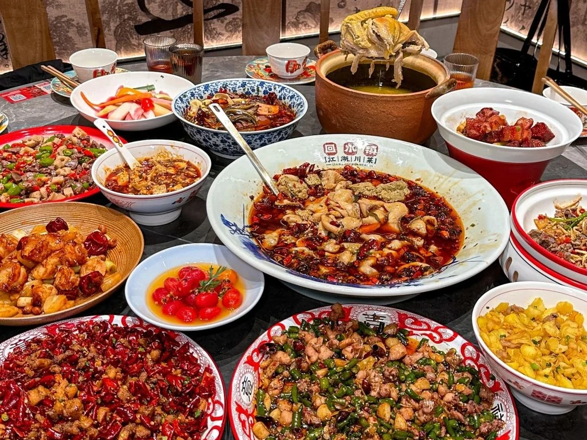
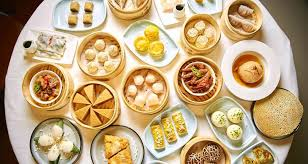
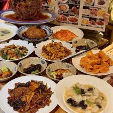
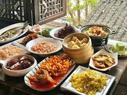

Смелые, пряные и ароматные блюда
Сычуаньская кухня известна своими смелыми вкусами, особенно остротой и уникальным вкусом "мала" (острое и онемение).
Сычуаньские повара мастерски используют ферментацию, сушку и копчение для создания сложных вкусовых профилей.

Изысканность и свежесть ингредиентов

Кантонская кухня подчеркивает естественные вкусы свежих ингредиентов с минимальным использованием специй.
Кантонская кухня наиболее известна за пределами Китая и оказала большое влияние на мировую китайскую кухню.
Основа северной китайской кулинарии
Шаньдунская кухня известна своими солеными вкусами, хрустящими текстурами и использованием морепродуктов.
Шаньдунская кухня считается одной из старейших и наиболее влиятельных в Китае, оказав влияние на пекинскую кухню.

Изысканная и тщательно приготовленная

Кухня Цзянсу славится тщательной техникой приготовления, мягкими вкусами и красивой подачей блюд.
Цзянсуская кухня считается одной из самых изысканных и часто ассоциируется с императорской кухней.
Свежие и нежные вкусы
Умами и мягкие текстуры
Острая и ароматная
Простая и деревенская